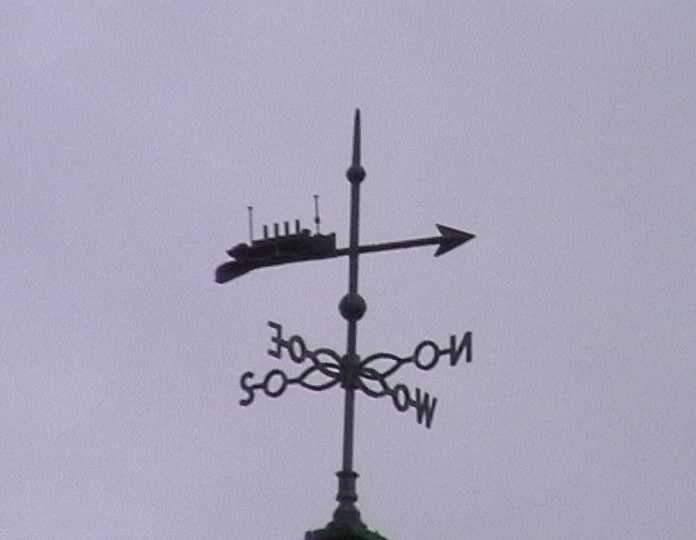
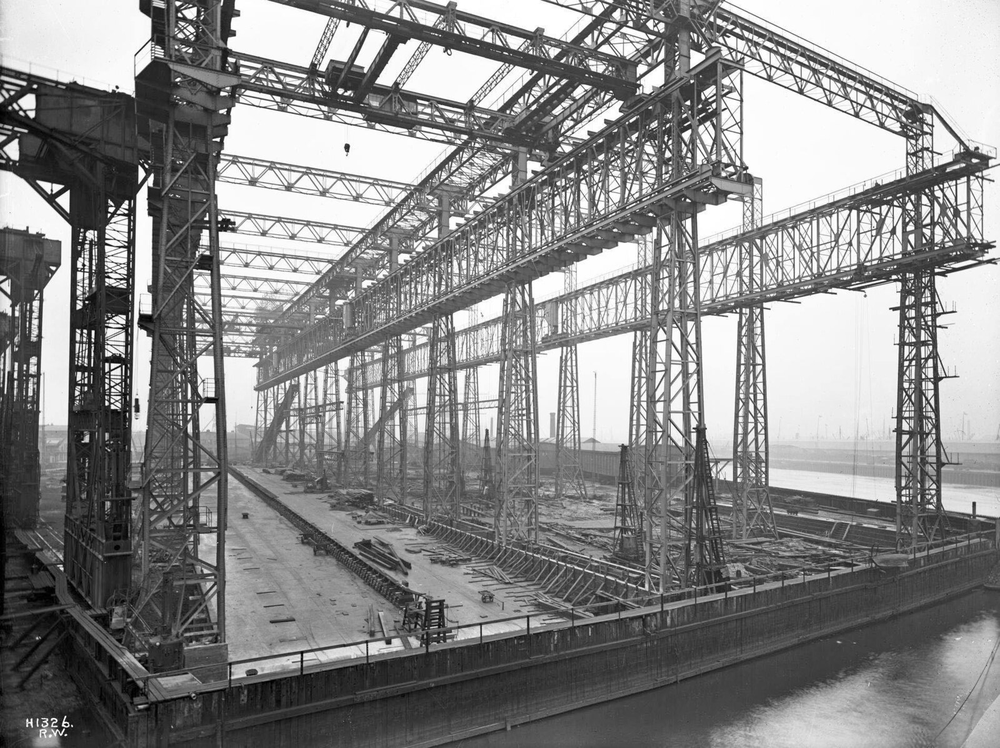
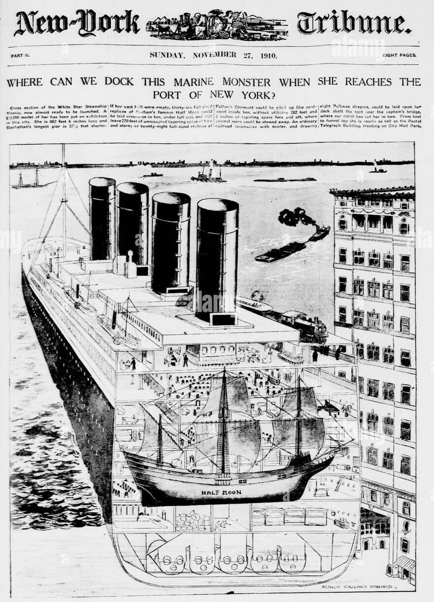
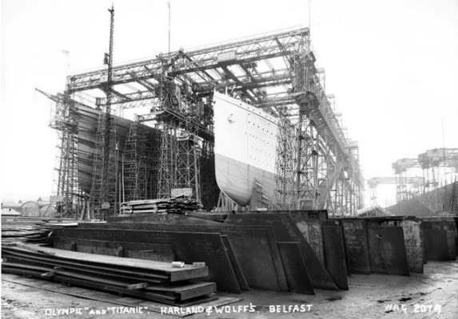
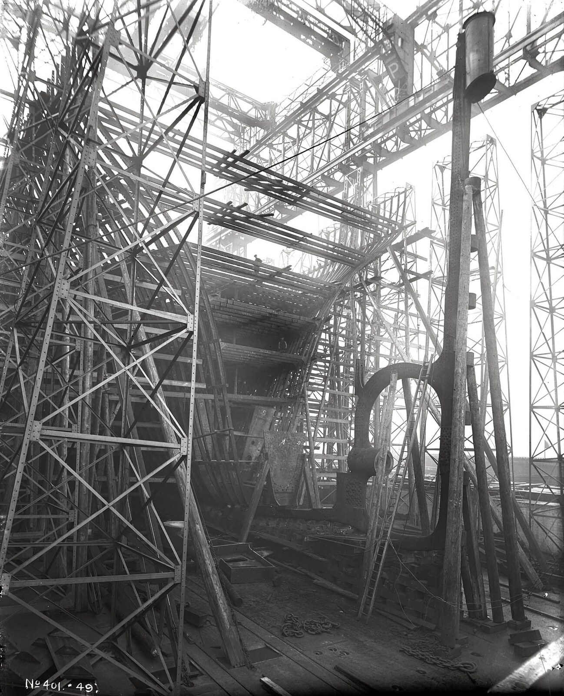
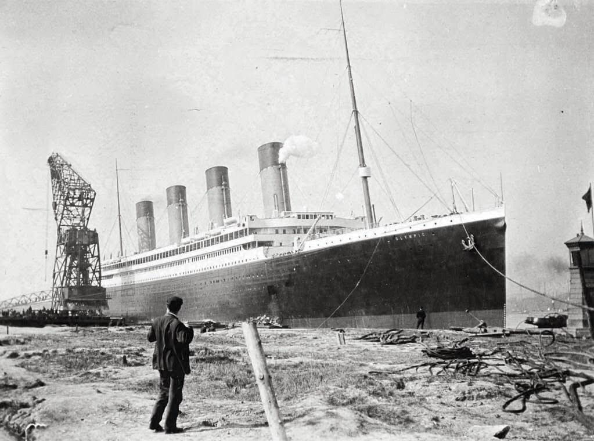
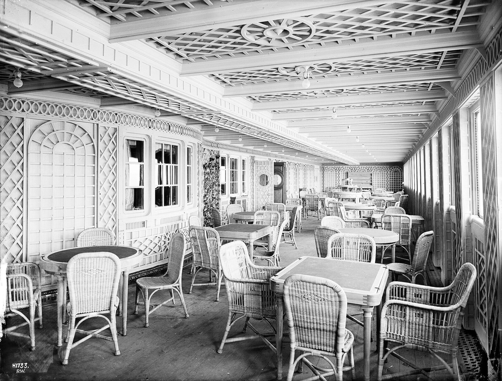
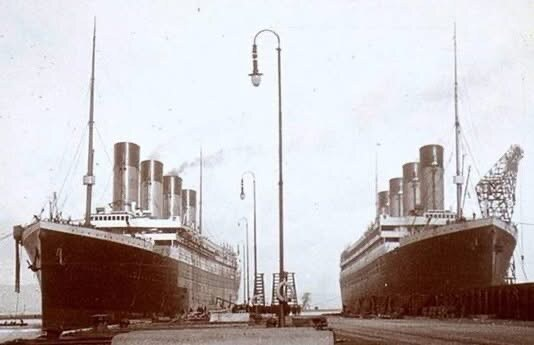
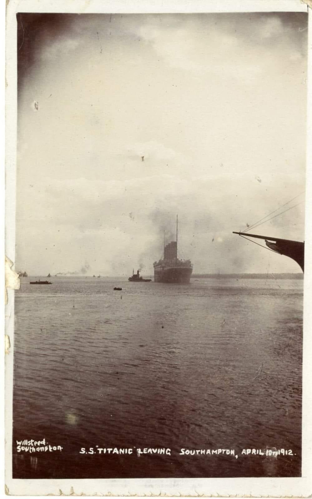

These pages contain a brief history of the R.M.S. Titanic, a collection of Titanic web sites, photographs of surviving Titanic memorials, and unique pictures from James Cameron’s film set.
See also

The Royal Mail Ship Titanic. There are few people who have never heard the name, and don’t know of her tragic end. The mystique surrounding this ship has endured for more than a century. White Star Line’s most senior commander, Captain E.J. Smith, could scarcely have foreseen that he was sailing into history when he eased Titanic out of Southampton for the maiden voyage on Wednesday April 10th 1912. Just over five days later, at 2.20 am on Monday April the 15th 1912, Titanic disappeared under the Atlantic, just off the Grand Banks, not to be seen again by human eyes for another 73 years.
That night 1500 people died. They ranged from the poorest working men and women, to the equivalent of today’s superstars. Top politicians, celebrities, millionaire entrepreneurs, and 200 ordinary families all perished. This was the human cost of the Titanic disaster.
There are many reasons for the continued interest in Titanic: the stories of the passengers and crew; the fact that not a single life need have been lost if more lifeboats had been provided; the (some think) hubris of building an “unsinkable ship” (though neither White Star nor builders Harland and Wolff ever made that claim; people often misquote The Shipbuilder magazine’s “practically unsinkable” comment); the luxury and workmanship that the ship embodied; the fact that a nearby mystery vessel could have saved everyone on board but did not approach (the Californian/Captain Lord controversy continues to this day); the bravery and sheer professionalism of Captain Rostron who skilfully navigated the Cunard liner Carpathia through the deadly ice field at maximum speed to save more than 700 people by daybreak, and of course the discovery of the wreck itself by Dr Robert Ballard’s team on Sunday September the 1st 1985. With the James Cameron Titanic film released in 1997, interest in Titanic peaked again, and touring exhibitions of Titanic artifacts continue to draw large crowds.
It all started in 1907, over dinner at Downshire House, the London home of Lord and Lady Pirrie. Lord Pirrie was chairman of Harland and Wolff, the Belfast shipbuilders, and his guest, J. Bruce Ismay, was managing director of the White Star Line. Cunard was about to launch the Lusitania and Mauretania, the fastest liners afloat, so Pirrie and Ismay decided to compete on luxury instead of speed. They planned three ships, each the largest and most luxurious ever seen: Olympic, Titanic and Gigantic. The “contract” was a single-page letter, a gentleman’s agreement, and Olympic and Titanic each cost about £1,500,000.
The ships were so big, at 882 feet 9 inches long, that before Harland and Wolff could even begin, they had to turn three of their slipways into two larger ones, and put up a giant, scaffolding-like framework to build the ships in, the Arrol Gantry.


The size of the new ships presented a problem in New York too. They were designed for a service from Southampton, by way of Cherbourg in France and Queenstown in Ireland, to New York, and New York didn’t have a pier long enough for them to moor alongside! After a bit of wheeling and dealing, J.P. Morgan, whose International Mercantile Marine combine owned the White Star Line, persuaded the New York harbour authorities to let him build a longer one, ready for when the ships entered service.
The very first keel plate of the Olympic was laid on December 16th 1908. Three months later, on March 31st 1909, the Titanic’s keel was started, and the first two Olympic class liners began to tower over Belfast, side by side in the gantry. Some 15,000 men worked at the yard.


Titanic was a “triple screw” liner, with three propellers. The two outer, three-bladed “wing” propellers, each 23 feet 6 inches across, were driven by two enormous triple-expansion steam engines, which developed 30,000 horsepower between them. A smaller centre propeller was driven by a 16,000 horsepower steam turbine, which used the steam left over from the main engines; it could be stopped, but not reversed. The centre propeller was cast in one piece from manganese bronze, while the bronze blades of the wing propellers were bolted to cast steel centres, or “bosses”. Those bolts can still be seen in pictures of the wreck.
Talk of “inferior brittle steel” being used is rather misleading. The steel produced in 1912 had a higher sulphur content than today’s steel, but that used for Titanic was the best quality available at the time. To say otherwise is rather like saying that NASA used poor quality computers in the Apollo programme, just because they had only a fraction of the power of today’s desktop PC. They used the best available at the time.
It took 26 months to build Titanic’s hull, from laying the keel to the launch, and another 10 months in the fitting-out basin, where her engines, interiors and superstructure were added, before she was ready for her sea trials on April 2nd 1912.

On May the 31st 1911 at the Harland and Wolff shipyard in Belfast, on the same day the Olympic completed her sea trials and was handed over to White Star Line, Titanic, with the help of twenty-two tons of tallow, soap and oil, became the largest moveable, human-fabricated object in the world. In keeping with White Star Line tradition, she was never christened, sliding into the River Lagan with surprisingly little wake, coming to rest in less than her own length. It had taken over two years from the laying down of the keel to the launch, and almost another year would pass before she emerged from the fitting-out basin as the most luxurious ship ever built.
Titanic was equipped with four 400-kilowatt electrical generators, which meant that passengers could use electric lamps and heaters in their rooms. This was a luxury that very few of them would have in their own homes, and when we talk of the steerage passengers today, it must be remembered that their cabins and accommodation were exceptionally good for the time, as was their food. The gymnasium had an electric camel; electric lifts took passengers and crew between decks. The power was also used for the loading cranes, cooking in the galley, refrigerating the huge stores of fresh food down near the orlop deck, lighting and heating the public areas, the ventilation fans, operating the watertight doors, the telephone system and the Marconi ‘wireless’ equipment. Titanic’s two radio operators manned a 5 kW rotary spark transmitter which, with the four-wire antenna suspended 250 feet above sea level between the ship’s masts, had a range of up to 400 miles during the day and up to 2000 miles at night. The Titanic engineers were lost to a man whilst keeping the generators going, providing power for the lights and radio to help others escape, right up to within minutes of when she sank.

The Titanic was originally meant to sail in March 1912, but the collision between the Olympic and the cruiser, Hawke, and the need to repair the hull and replace one of the Olympic’s propeller shafts delayed the completion of the Titanic because Harland and Wolff had to carry out the repairs. Titanic began her maiden voyage at noon on April the 10th, 1912. Even that date had been in doubt, because a coal strike meant that the White Star Line had to appropriate coal from other ships to use on Titanic. Perhaps the rush for fuel contributed to the spontaneous coal fire that started in number 10 bunker, boiler room 6. The whole Titanic story seems to be strewn with “what if ..” scenarios. There are many links along the “causality chain” which, if broken, might have saved the ship.


Though it was registered in Liverpool, Titanic began her maiden voyage from Southampton on that Wednesday spring morning. As a result of the recently ended coal strike, much of her fuel had been taken from other White Star ships, whose passengers had been transferred to Titanic at no extra cost. Many of the passengers had taken the Boat Train from London’s Waterloo station, down to Southampton, no doubt looking forward to being the first paying passengers on the grandest ship afloat. From Southampton, Titanic crossed to Cherbourg, France, and anchored a mile offshore so that the purpose-built tenders Nomadic and Traffic could bring more passengers on board, Cherbourg not having a pier large enough for the Olympic class liners. That evening Cherbourg was left behind as the ship headed for its next and, as it turned out, final port of call. By lunchtime on April 11th, Titanic was anchored off Queenstown (now Cobh) in Ireland. Fortunately for history and himself, it was here that Francis Browne, a young Jesuit who was later ordained a priest, got off the ship, taking his camera with him. The Odell family had similar good fortune, and from their album comes the picture seen in many books, simply captioned “The last known photograph of the Titanic”.
That same afternoon, Titanic weighed anchor, steamed along the coast of Ireland and on out into the Atlantic, with Captain Smith’s blue ensign on the rear flagpole, the White Star flag on the main mast, and the stars and stripes of her intended destination, New York, U.S.A., fluttering on the foremast. Want to know more ? Follow some of the links below.
| Length | 882 feet 9 inches (269 metres) |
| Beam (width) | 92 feet 6 inches |
| Keel to top of the bridge | 104 feet |
| Gross tonnage | 46,328 tons |
| Boilers | 29 (24 double-ended and 5 single-ended), with 159 furnaces, in 6 boiler rooms |
| Power | Two triple-expansion engines of 30,000 hp between them, and a 16,000 hp turbine |
| Propellers | 3 (two wing propellers 23 feet 6 inches across, and a smaller centre propeller) |
| Watertight bulkheads | 15 |
| Lifeboats | 20, with room for 1,178 people: 14 lifeboats for 65 each, 2 emergency cutters for 40, and 4 collapsibles for 47 |
| Anchors | 3, the centre one weighing about 15¾ tons |
| Fares | From £3 to £8 in third class, £12 in second class, and up to £870 for a first class parlour suite |
| On board | About 2,224 passengers and crew |
| Saved | About 710, brought to New York by the Carpathia |
| Lost | About 1,500 |
Earl Chapman has kindly agreed to let me post his Titanic Chronology which continues the story of the Titanic in the days leading up to and during the maiden voyage.
Titanic has gone from being called the most expensive flop of all time to winning 11 Oscars ! See what all the fuss is about and visit the unique film set pictures in these pages.
Steve Perez and Richard Seigle have both kindly allowed me to display their film set pictures of the reproduction, 775-foot Titanic made for James Cameron’s film. The photographs are excellent, and show the set at Baja California, Mexico.
The film set pictures from Richard Seigle comprise 27 photographs taken by an extra on the movie, each accompanied by a detailed description.
The film set interior pictures, also taken by Steve Perez and Richard Seigle, show the interior sets built for the film.
For cast details and other film information see The Internet Movie Database.
The following URLs are, in no particular order, some of the Titanic web sites that I’ve found or had pointed out to me. I hope you find them interesting.
Every so often someone revives the theory, first put forward by Robin Gardiner in the 1990s, that White Star secretly switched the two sisters: that the Olympic, damaged in her 1911 collision with the cruiser Hawke, was disguised as Titanic and deliberately sunk for the insurance money, while the real Titanic sailed on for 24 years as the Olympic. It makes a good story, but it doesn’t stand up.
For the full story, these give much longer rebuttals: